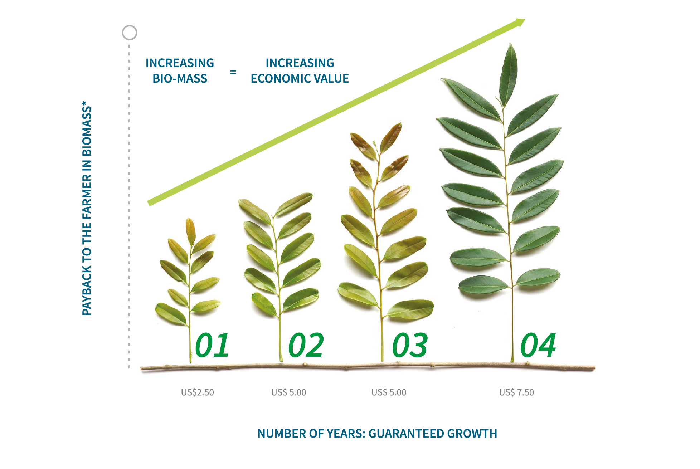

EarthRestoration contributes to this goal by creating value for Primary Ecosystem Services (PES). This allows for an increase in the value of rural product and for the capitalization of Ecosystem Services that can reward participating individuals.
Who We Are
At EarthRestoration in Sri Lanka, we are a group of scientists, farming specialists, artists, researchers, social activists, IT creators, and a myriad of skilled geo-healers who have come together to develop a new standard of accountability for farmland development using methods such as Analog Forestry / AgroForestry / Permaculture or co-evolved traditional methods for sustaining life on Earth.
Nature of Our Business
Much of the current ‘environmental’ activity is merely an exercise in rearranging the deck chairs on the Titanic’. As pointed out by the UN in 2021, the situation today has become a ‘Code Red’ for humanity, but to expect a solution from the very economy that created the problem, does not provide much hope for the world. Is there anything different that we can do? One suggestion to emerge is to place value on things that externalize positive values into the Global Commons instead of mining value out of it. This is a process of ‘giving back’ or externalizing the output as a fundamental process of sustainable wealth generation for humans and the planet.
Collaborators at EarthRestoration see that the catastrophes on planet Earth are brought about by the combined effect of excess Carbon Dioxide accumulating in the biosphere due to fossil fuel combustion. But also the unsustainable combustion of OXYGEN by the very same industry. OXYGEN is the most precious and rare substance in the universe, and yet today net production of OXYGEN has ceased on planet Earth. That's why collaborators at EarthRestoration are accounting for the positive externality value of OXYGEN produced by young trees as a standard measurement practice and to support their good farming practices such as analog Forestry / Agroforestry / Permaculture in the face of climate changes.
EVERY tree has a unique Photosynthetic Biomass accumulation curve. By using the EarthRestoration CPES algorithm, the existing market value of net Oxygen produced during each LifeForce tree's early growth stages can be bridged to the farmer for nurturing the tree UNIT and integrating natural farming practices such as Analog Forestry / AgroForestry / Permaculture or co-evolved traditional methods to the farmland.


Mission
It is our vision to educate and assist farmers to develop more Adaptive Resilient Ecosystem Areas [AREA's] such as Analog Forests/ Agro-forests/ Forest Gardens/ permaculture and other natural landcare management methods by contracting the primary ecosystem services being generated on their farms.
Vision
To create an economic system that quantifies wealth as living photosynthetic biomass on this planet.
“The fabled wish now speaks true; Money does grow on trees”
The LifeForce ledger is a digital transaction record of new tree UNITS that are each measured for the amount of Photosynthetic Biomass it accumulates over 4 years. Recorded and Validated over time the LifeForce transaction architecture allows collaborating eco-developers to invest in planting trees, as well as support the short & medium term nurture required till they are well established by bridging the value of CPES generated by each tree UNIT. Every Lifeforce ledger issued allows the buyer transparent access to monitoring records and validations of every farmer training and payment for ecosystem service that was made throughout the LifeForce contract.
Watch Science : Photosynthetic Biomass is the only production system on the planet that contributes to maintaining the global oxygen cycle :
Watch Interview :
Our Sustainable Development Goals


ER focusses on landscape restoration based on perennial crops and in the creation of advanced agricultural landscapes, where biological ambient cooling is used to avoid high temperature crop loss. We contribute to the security of agriculture production by mitigating heat stress.

ER solutions facilitates the production of Oxygen and Clean Water locally, a fundamentally important contribution to good health in any context. PES units also contribute to the filtering of airborne pollutants, shading, and the provision of a stress reducing green environment.

ER supports the research and technologies required to assess volumes and quality of different pools of photosynthetic Biomass. We encourage and promote the generation of essential knowledge & learning systems that will enable students to respond to the imaging needs of monitoring and reporting.

ER solutions such as ‘LifeForce Units’ allow for an increased proportion of the household income to be generated by biomass, providing non-gender biased income. Earth Restoration solutions provide payments for tending to crop trees during their non-productive early stages of growth.

Plant derived evapotranspiration is the largest producer of clean water on land. ER measures and pays for the generation of evapotranspirative clean water, because contaminated groundwater is filtered and facilitated through the tree.

Biomass is a non-fossil, solid, transportable energy source that is the carbon alternative to ‘fossil’ in generating energy. Our actions respond to this goal by increasing the production of biomass and subsequent production of PES.

The ER economy provides for sustainable income to be generated from a rural home environment thus reducing the need for travel, and contributing to a new measure of economic growth.

ER monitoring technologies demand new and innovative designs in both equipment and software, to provide timely reporting to existing scientific, financial, as well as social institution created for the transaction of PES into a global system.

EarthRestoration by promoting value in increasing biomass contributes to the sequestration and removal of atmospheric carbon, a stated goal in climate action. It also increases PES that contributes to maintaining cooler ambient temperatures – an essential agricultural need in a future warming climate.

PES Units placed in Analog Forest or similar systems will clean and filter surface water to provide a benign aquatic environment within watersheds. All terrestrial pollutants ultimately end up in the surface waters. Well placed UNITS can reduce these toxic loads by over 80%.

EarthRestoration solutions are designed to increase the output of PES in terrestrial landscapes with diminishing sustainability. PES units also provide for an increase in soil organic matter and also provides habitat for biodiversity.
Our Team

Dr.Ranil Senanayake
Chairman
Dejan deZoysa
CEO
Lilan Dayananda
Director
Pankajan Satkunam
Tech-ConsultantTharindu Dissanayake
Tech-LeadFrequently Asked Questions
Here are some basic FAQ's related to EarthRestoration
LifeForce can be used as a solution to bridge contractual benefits and transparently manage payments for ecosystem services (PES) to farmers during the initial and valueless early growth stages of a trees establishment phase. As photosynthetic biomass can retain value only as long as it is living, the dependence of processing and exporting product to sustain economic activity ceases. The tree farmer is paid for the amount of photosynthetic biomass that they maintain alive on their land.
a. Pays the farmer up to $100 per tree at the end of the contract
b. The LifeForce certificate ensures the survival of new trees planted on farms.
c. The LifeForce ledger is a transparent management mechanism for achieving SDGs
b. The LifeForce certificate ensures the survival of new trees planted on farms.
c. The LifeForce ledger is a transparent management mechanism for achieving SDGs
In Sri Lanka - Project 1
Select from our TREE UNIT inventories and landscapes (LINK to IT platform / (how our algorithms work))
By activating a digital smart contract for each tree and managing 4 years of contractual tree-care together with the owner. One consequence of climate change is the predicted rise in global temperatures. If ambient temperatures exceed 40 degrees , which has become the reality in many places even today, food production will be compromised. All the food we eat originates with plants and plants produce using photosynthesis. Photosynthesis, or the capture of solar energy by plants, is done with chlorophyll, the thing that makes plants green and chlorophyll begins to break down after 40 degrees. Landscapes whose summer temperatures go beyond this limit will have smaller and smaller crops as the temperatures increase. The only solution to this oncoming crisis, is to begin introducing trees at strategic points on the landscape
Use applied restoration methodologies such as Analog Forestry (AF) / Agroforestry / Permaculture / Assisted Natural Regenerative (ANR) / and other traditional forms of natural farming in order to select the most appropriate species and engage farmers and ecosystem designers in sustainable landscape development.
Trees and all other forms of vegetation cool the environment around them through the transpiration process, which takes place in the leaves. The water absorbed by the roots is detoxified and sent up to the leaves which release it as vapor, cooling the air around it. All LiferForce UNITS are measured for this transpiration phenomena based on the weight of photosynthetic biomass that has been accumulated through the contract period.
We pay the most for tree-care in the world: making this a very potent solution by which to positively affect human behavioral changes that are more conducive to a sustainable planet for humans and biodiversity.
Depends on the selection of species and annual verification : Select from our TREE UNIT inventories and landscapes (LINK to IT platform / (how our algorithms work))
he value of net Oxygen production is discounted and not recognized by carbon credits. Also read to understand :
-Click Here-
Contact Us
Contact Us anytime for more Information.
Location:
Belipola Arboretum, Mirahawatte, Sri Lanka
Email:
info@restore.earth
Call:
+94 76 719 1428
Open Hours:
Mon-Sat: 11AM - 23PM
Loading